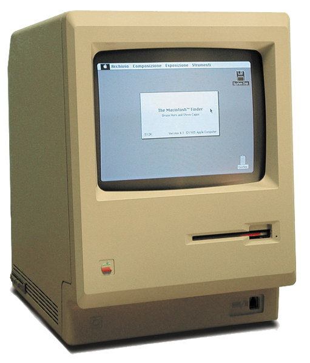
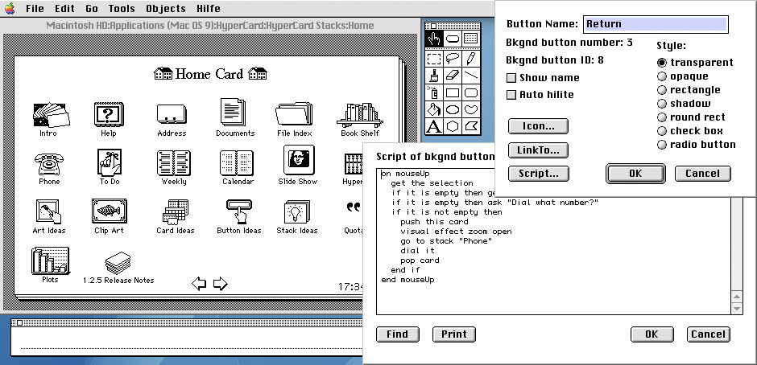

Node.JS
JavaScript на сервере

JavaScript на сервере
JavaScript на сервере
JavaScript на сервере

[ op | rs | rt | address/immediate]35 3 8 68 decimal100011 00011 01000 00000 00001 000100 binary
before 1949
mov ah,9mov dx,OFFSET Msgint 21hint 20h

PKT64K - set load address to 64GK - set @-parameter to current load point...
1949
1949
SUBROUTINE PROD(DATA, N)C MULTIPLY THE ELEMENTS OF DATAC TOGETHERREAL PRODCTPRODCT=1;IF (N) 9,9,8DO 9 I=1,N8 DO 9 I=1,NPRODCT=PRODCT*DATA(I)9 CONTINUERETURN PRODCTEND
1954 — 1957
ALTER X TO PROCEED TO Y
IF SALARY > 9000 OR SUPERVISOR-SALARY OR = PREV-SALARY
1959
5 LET S = 010 INPUT V20 LET N = NUM30 IF N = 0 THEN 9940 FOR I = 1 TO N45 LET S = S + V(I)50 NEXT I60 PRINT S/N70 GO TO 599 END
1964
5 LET S = 010 INPUT V20 LET N = NUM30 IF N = 0 THEN 9940 FOR I = 1 TO N45 LET S = S + V(I)50 NEXT I60 PRINT S/N70 GOTO 599 END
1964
5 LET S = 010 INPUT V20 LET N = NUM30 IF N = 0 THEN 9940 FOR I = 1 TO N45 LET S = S + V(I)50 NEXT I60 PRINT S/N70 GO TO 599 END
1964
mode, op, prio, proc,flex, heap, loc, long, ref, short,bits, bool, bytes, char, compl, int, real, sema, string, void,channel, file, format, struct, union,co "¢", comment "¢", pr, pragmat,case ~ in ~ ouse ~ in ~ out ~ esac "( ~ | ~ |: ~ | ~ | ~ )",for ~ from ~ to ~ by ~ while ~ do ~ od,if ~ then ~ elif ~ then ~ else ~ fi "( ~ | ~ |: ~ | ~ | ~ )",par begin ~ end "( ~ )", go to, goto, exit.
1968
mode, op, prio, proc,flex, heap, loc, long, ref, short,bits, bool, bytes, char, compl, int, real, sema, string, void,channel, file, format, struct, union,co "¢", comment "¢", pr, pragmat,case ~ in ~ ouse ~ in ~ out ~ esac "( ~ | ~ |: ~ | ~ | ~ )",for ~ from ~ to ~ by ~ while ~ do ~ od,if ~ then ~ elif ~ then ~ else ~ fi "( ~ | ~ |: ~ | ~ | ~ )",par begin ~ end "( ~ )", go to, goto, exit.
1968
LET START() = VALOF $(ALL := 1FOR I = 1 TO 12 DO $(COUNT := 0TRY(0, 0, 0)WRITEF("%I2-QUEENS PROBLEM HAS %I5 SOLUTIONS*N", I, COUNT)ALL := 2 * ALL + 1)$RESULTIS 0)$
1967, 1969
printn(n,b) {extrn putchar;auto a;if(a=n/b) /* assignment, not test for equality */printn(a, b); /* recursive */putchar(n%b + '0');}
1967, 1969
/* int */ calling_function() {long test1;register /* int */ test2;test1 = some_function();if (test1 > 0)test2 = 0;elsetest2 = other_function();return test2;}
1969 — 1973
a < bifTrue: [^'a is less than b']ifFalse: [^'a is greater than or equal to b']
1969 — 1972
Давайте будем звать все объекты - акторами и они будут процессами, которые будут меняться сообщениями.
Да-да. Erlang
1973

1984
1987 (Java: 1995)
1987


on mouseUprepeat with i = 1 to the number of card fieldshide field iend repeatend mouseUp
1987
Xanadu - первая концепция гипертекста, созданной Тедом Нельсоном в 1960 году
Реализация вышла 1998. Немного поздновато.
Mosaic (Netscape) vs Spyglass (aka IE by MS)
1991
JavaScript - I am your father!
4 апреля 1994 / май 1994
= Java + Scheme + Self
Был разработан за "пару недель" — September 1995 релиз в Netsacpe 2.0
window.onload = function() {var linkWithAlert = document.getElementById("alertLink");linkWithAlert.onclick = function() {return confirm('Вы уверены?');};};
Так и жили на стороне браузера до <sarcasm>2009</sarcasm> года
1998 — Windows Host Script в Windows 98
var fso = new ActiveXObject("Scripting.FileSystemObject");var a = fso.CreateTextFile("c:\\testfile.txt", true);a.WriteLine("This is a test.");a.Close();
December 1994 — Netscape Enterprise Server
xmlhttp = new XMLHttpRequest();xmlhttp.onreadystatechange = function { /* ... */ };xmlhttp.open("GET","ajax_info.txt",true);xmlhttp.send();
xmlhttp = new XMLHttpRequest();xmlhttp.onreadystatechange = function { /* ... */ };xmlhttp.open("GET","ajax_info.txt",true);xmlhttp.send();
xmlhttp = new XMLHttpRequest();xmlhttp.onreadystatechange = function {
alert(xmlhttp.responseText); };xmlhttp.open("GET","ajax_info.txt",true);xmlhttp.send();
О хвала вам, чудесные замыкания!
from twisted.internet import reactorfrom twisted.web.server import Sitefrom twisted.web.resource import Resourceimport timeclass ClockPage(Resource):isLeaf = Truedef render_GET(self, request):return "%s" % (time.ctime(),)resource = ClockPage()factory = Site(resource)reactor.listenTCP(8880, factory)reactor.run()
2009
class Primes:def isPrimeDivisible(self, candidate):for i in range(1, self.prime_count - 1):if (candidate % self.primes[i]) == 0:return Truereturn Falsewhile p.getPrimeCount() < 5000:if not p.isPrimeDivisible(c):p.addPrime(c)c += 1
var http = require("http");function callback(request, response) {response.end("Hello World");};var server = http.createServer(callback).listen(8080);